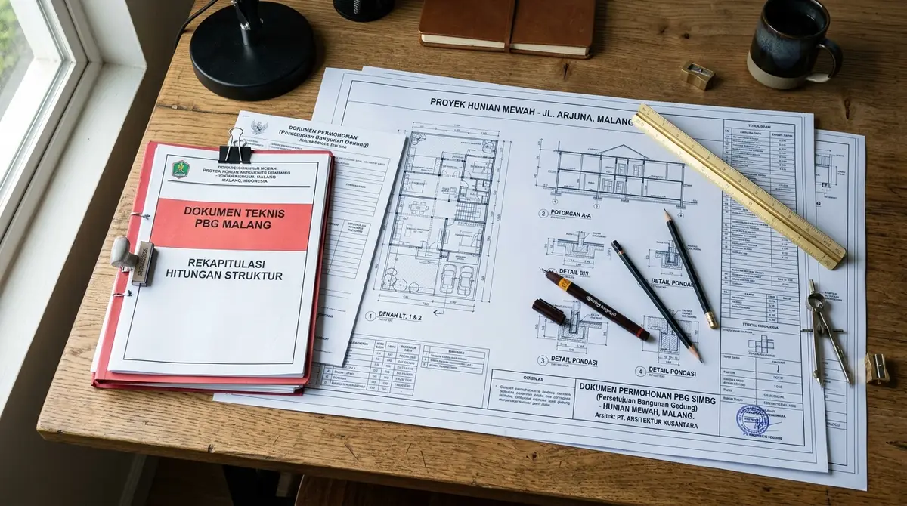

Ringkasan Inti
- Sanksi bangunan Malang berlaku bertahap mulai dari peringatan tertulis hingga tindakan teknis yang lebih tegas.
- Rumah mewah dengan nilai investasi besar berisiko mengalami kerugian finansial lebih signifikan akibat sanksi legalitas.
- Arsitek rumah mewah Malang berperan membantu memastikan dokumen legalitas lengkap sejak tahap perencanaan.
- Menghindari sanksi sejak awal jauh lebih efisien dibanding menangani konsekuensi hukum di kemudian hari.
Daftar Isi Artikel
Sanksi bangunan Malang untuk rumah mewah tanpa legalitas lengkap dapat berupa peringatan, penghentian konstruksi, denda, hingga risiko pembongkaran pada pelanggaran berat.
Apa Saja Jenis Sanksi Bangunan yang Berlaku di Malang?
Sanksi bangunan yang berlaku di Malang umumnya mengikuti mekanisme bertahap sesuai ketentuan yang diatur dalam regulasi bangunan gedung nasional, dengan penerapan yang disesuaikan peraturan daerah setempat.
Jenis sanksi yang umum diterapkan:
- Peringatan tertulis dari Dinas PUPR kepada pemilik bangunan yang belum memiliki dokumen PBG lengkap.
- Penghentian sementara kegiatan konstruksi hingga dokumen legalitas dilengkapi oleh pemilik bangunan.
- Denda administratif sesuai ketentuan peraturan daerah yang berlaku di wilayah Malang.
- Pembongkaran pada kasus pelanggaran berat yang tidak memenuhi standar keselamatan atau tata ruang yang ditetapkan.

Kenapa Rumah Mewah Perlu Lebih Waspada Terhadap Risiko Sanksi Legalitas?
Rumah mewah perlu lebih waspada terhadap risiko sanksi legalitas karena nilai investasi yang besar membuat dampak finansial akibat pelanggaran menjadi jauh lebih signifikan dibanding bangunan sederhana.
Alasan pentingnya kewaspadaan ekstra untuk rumah mewah:
- Skala investasi yang besar membuat kerugian akibat penghentian konstruksi atau denda menjadi lebih terasa secara finansial.
- Kompleksitas desain rumah mewah, seperti bangunan bertingkat atau fasilitas khusus, membutuhkan dokumen teknis yang lebih detail dan rentan terlewat.
- Nilai jual properti mewah sangat dipengaruhi oleh kelengkapan dokumen legalitas, sehingga pelanggaran dapat berdampak besar pada nilai investasi jangka panjang.
Catatan Arsitek Malang
Pengurusan PBG untuk rumah mewah di kawasan Malang dan Kota Batu memerlukan kelengkapan gambar as-built dan perhitungan mekanika tanah oleh tenaga ahli bersertifikat. Jangan memulai pekerjaan cut-and-fill atau pemancangan pondasi sebelum Surat Persetujuan Bangunan Gedung (PBG) resmi diterbitkan melalui portal SIMBG, demi menghindari sanksi segel penghentian proyek oleh dinas berwenang.
Bagaimana Cara Menghindari Sanksi Bangunan Sejak Awal Proyek?
Menghindari sanksi bangunan sejak awal proyek dapat dilakukan melalui perencanaan legalitas yang matang bersama arsitek rumah mewah Malang yang berpengalaman menangani dokumen teknis kompleks.
Langkah yang dapat dilakukan untuk menghindari sanksi:
- Melibatkan arsitek bersertifikat sejak tahap perencanaan awal untuk memastikan desain sesuai standar dokumen PBG.
- Mengajukan PBG melalui SIMBG sebelum konstruksi dimulai, bukan setelah pekerjaan berjalan.
- Memastikan seluruh dokumen teknis, termasuk perhitungan struktur untuk elemen khusus, disusun sesuai standar yang diminta.
- Melakukan konsultasi berkala dengan Dinas PUPR setempat apabila terdapat perubahan desain di tengah proses konstruksi.
Apa Dampak Finansial Sanksi Bangunan bagi Pemilik Rumah Mewah?
Dampak finansial sanksi bangunan bagi pemilik rumah mewah dapat jauh lebih besar dibanding bangunan sederhana, mengingat skala investasi dan kompleksitas proyek yang umumnya lebih tinggi.
Dampak finansial yang perlu diperhatikan:
- Biaya tambahan untuk pengurusan dokumen susulan yang umumnya lebih rumit dibanding pengajuan PBG standar di awal proyek.
- Kerugian akibat penghentian sementara konstruksi, termasuk biaya tenaga kerja yang tetap berjalan meski pekerjaan tertunda.
- Potensi penurunan nilai jual properti akibat status legalitas yang belum lengkap saat proses transaksi di kemudian hari.
Sanksi bangunan Malang menjadi risiko nyata bagi pemilik rumah mewah yang mengabaikan proses legalitas sejak awal proyek. Melibatkan arsitek rumah mewah Malang yang berpengalaman membantu memastikan dokumen PBG lengkap sejak tahap perencanaan, sehingga risiko sanksi dan kerugian finansial dapat dihindari.
Kalau Anda sedang merencanakan pembangunan rumah mewah di Malang dan ingin memastikan seluruh kelengkapan dokumen PBG beres tanpa kendala, tim kami siap mendampingi dari tahap desain DED hingga penerbitan izin. Silakan cek layanan kami di sini untuk konsultasi awal.
FAQ (Pertanyaan Sering Diajukan)
Apakah rumah mewah lebih sering menjadi target pemeriksaan legalitas?
Tidak ada ketentuan khusus yang menargetkan rumah mewah, namun skala dan visibilitas bangunan besar terkadang membuatnya lebih mudah teridentifikasi apabila terjadi pelanggaran.
Berapa lama proses pemulihan legalitas jika rumah mewah sudah terlanjur dibangun tanpa PBG?
Durasi proses dapat bervariasi tergantung kompleksitas bangunan dan kelengkapan dokumen yang dapat disediakan pemilik untuk proses pemutihan.
Apakah asuransi properti tetap berlaku jika bangunan tidak memiliki PBG?
Kebijakan asuransi dapat bervariasi antar penyedia, namun ketidaklengkapan dokumen legalitas berpotensi memengaruhi klaim asuransi properti di kemudian hari.
Pastikan Legalitas PBG Rumah Mewah Anda Aman di Malang
Konsultasikan kebutuhan gambar teknis DED, perhitungan struktur, dan pengurusan SIMBG bersama tim arsitek berlisensi IAI Arsitek Malang.

Muhammad Musyaffa
Penulis & Tim Riset Arsitektur Maroon Arsitek Malang, spesialis pengurusan legalitas PBG/SIMBG, kepatuhan tata ruang, dan mitigasi risiko teknis konstruksi hunian mewah di Malang Raya.